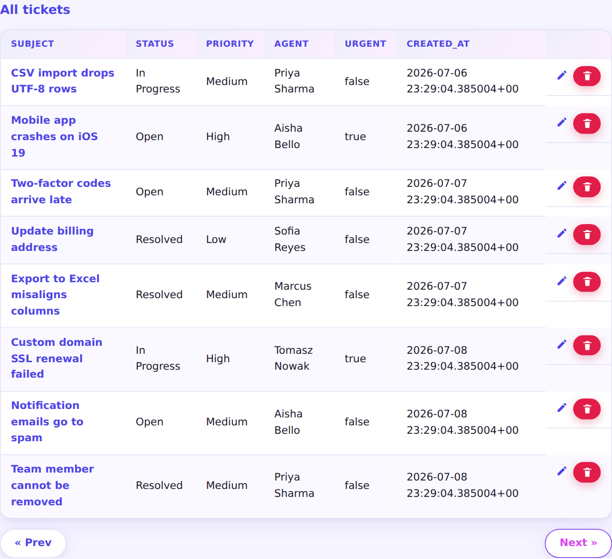
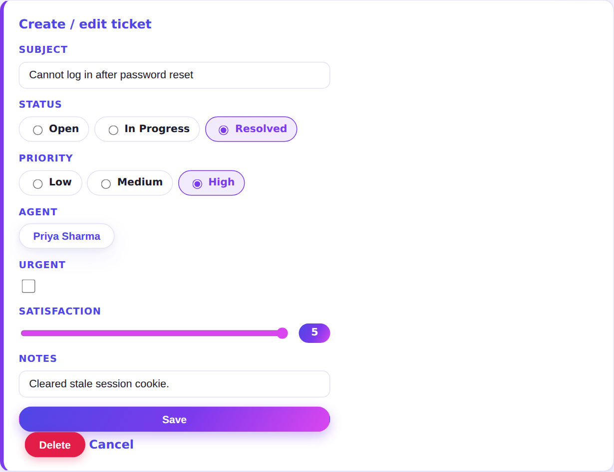
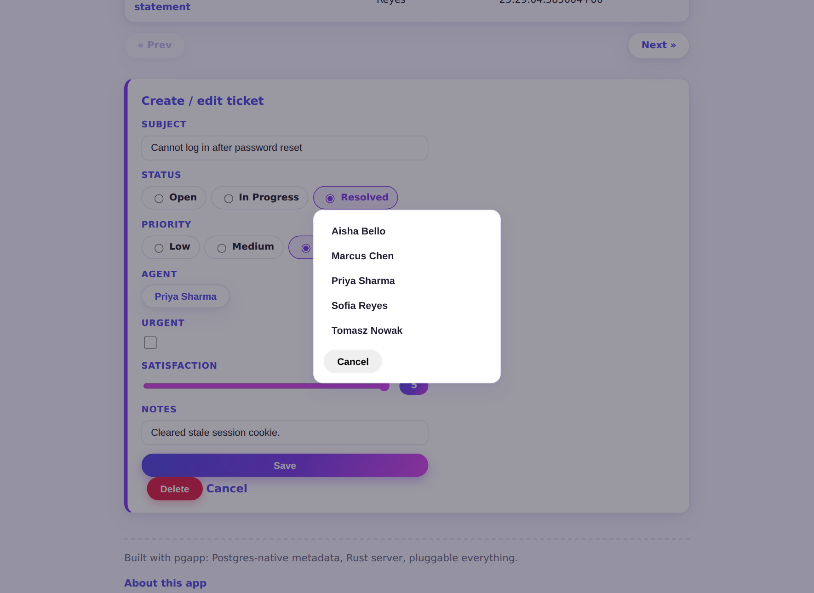
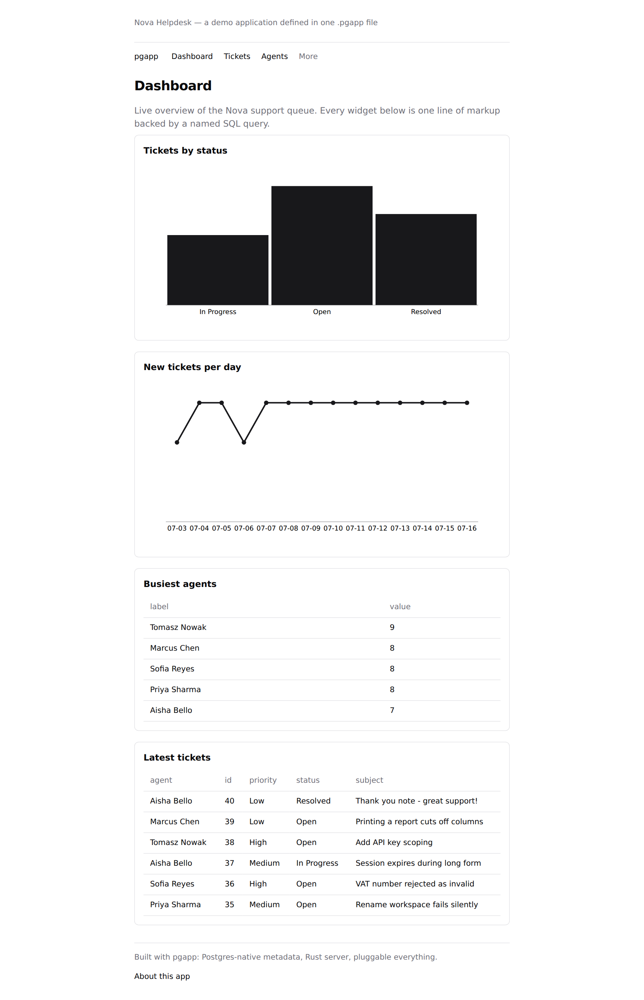

Paginated reports the database is happy about.
A Report is a read-only table over an entity. Pagination is keyset ("seek") on the primary key
— no COUNT(*), no OFFSET scans — so page 50 costs the same as page 1.
Columns can link to other pages, forwarding row values as URL parameters. And because a Form for the same entity sits on this page, every row automatically gets edit and delete actions.
Icons are pluggable too: these are the built-in inline SVGs; drop in a Font Awesome or
Material pack with icons: fontawesome in the markup.

Forms assembled from pluggable item types.
Every field's widget is a small Rust component: text, checkbox, radio group, read-only, a slider, a popup list of values. Adding your own is one file and one registry line — the markup grammar never changes.
The popup LOV here gets its choices live from a named query (select name as value from
agents…), and writes the picked value back through the DB-stored pgapp.setItem() JS runtime.


Charts with a swappable rendering engine.
A Chart component points at a named query and two of its columns. The built-in renderer draws dependency-free inline SVG on the server — no JS, no CDN.
Prefer canvas, D3, or a real charting library? Drop a chart.js file into
chart-libs/<name>/ and declare chart_lib: <name> in the markup. The server emits the rows as JSON and
your library draws them — it never needs to know how.

Spreadsheet-style editing for small tables.
An EditableTable renders every row as its own inline form — change a value, hit save, done. Plus an add-new row at the bottom. No list/edit round-trip for data you just want to tweak in place.

Named SQL, safely parameterized, shared everywhere.
Declare a query once — app-wide or scoped to one page — and reference it from charts, regions,
report sources, and popup choices. :name markers compile to genuine bind parameters,
never string interpolation.
Values cross pages through links: the Tickets report forwards each row's status as
?status=…, and this page's query reads it back as :status. Parameter passing
with zero code.

A login and roles, from one block of markup.
Add auth { } to the app and every page sits behind a sign-in:
argon2-hashed passwords, server-side sessions an admin can revoke by deleting a row,
and a one-time first-run screen that creates the admin account.
Then requires: admin on a page gates it by role — reads and writes. The Agents
page here returns 403 to the support team and renders for admins. Accounts are managed on the built-in
Users page, never in the markup: passwords don't belong in a source file.


One app. Any design system.
Rendered HTML only ever uses a fixed contract of .pgapp-* classes. A theme is a directory
with one CSS file that styles them — these two screenshots are the same app, the same database,
the same request, under two themes.
The colorful one ("vivid") was written for this demo in one CSS file. The other is the shadcn/ui default.

Start with one file. Split it when it grows.
An app is a single .pgapp file — until it isn't. Point pgapp at a
directory and every file under it merges into one app, Terraform-style: one file owns
the app shell (settings, auth, nav, chrome); the rest hold entities, pages, and queries,
referencing each other by name. No include statements, no import graph, no ordering.
The same name declared in two files is a startup error naming both, and every parse error reports its file and line. Same grammar in both modes — splitting is a file move, not a refactor. And either way, the layout is purely an authoring convenience: after sync, the database has never heard of your files.
helpdesk-modular/ ├─ app.pgapp # app "Helpdesk" { theme, auth { }, nav, chrome } ├─ tickets.pgapp # entity "tickets" + its app-scoped queries ├─ agents.pgapp # entity "agents" + the agent_names LOV └─ pages/ ├─ dashboard.pgapp # page "Dashboard" ├─ tickets.pgapp # pages "Tickets" + "TicketDetail" ├─ agents.pgapp # page "Agents" (requires: admin) └─ backlog.pgapp # pages "Backlog" + "About"
page "Agents" { requires: admin editable_table "Support agents" of agents { columns: name, team, active } }